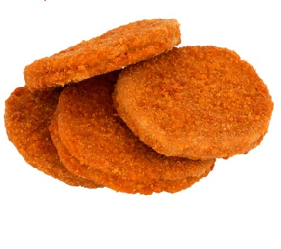

Ingredients
- 2 potatoes (boiled & mashed)
- ¼ cup peas / matar (boiled)
- ¼ tsp turmeric / haldi
- 1 cup bread crumbs
- ½ tsp kashmiri chilli powder
- ½ tsp coriander powder
- oil for deep frying
- ¼ tsp cumin powder / jeera powder
- ¼ tsp pepper (crushed)
- salt to taste
- ½ tsp ginger garlic paste
- ¼ cup thick poha / beaten rice / aval (washed)
Directions
- firstly, take 2 boiled and mashed potatoes, ¼ cup boiled peas and spices.
- combine everything and prepare patties.
- dip into maida paste and roll in bread crumbs.
- deep fry in hot oil or bake at 180 degree celsius for 20 minutes or till it turns golden and crisp.
- cut half the burger bun and spread a tsp of prepared burger sauce on both sides.
- on bottom side of bun place few lettuce followed by prepared aloo patties.
- again spread a tsp of burger sauce.
- place 2 slice of tomato and 2 rings of onion.
- cover with burger bun and press slightly.
- finally, serve aloo tikki burger with french fries or potato chips.